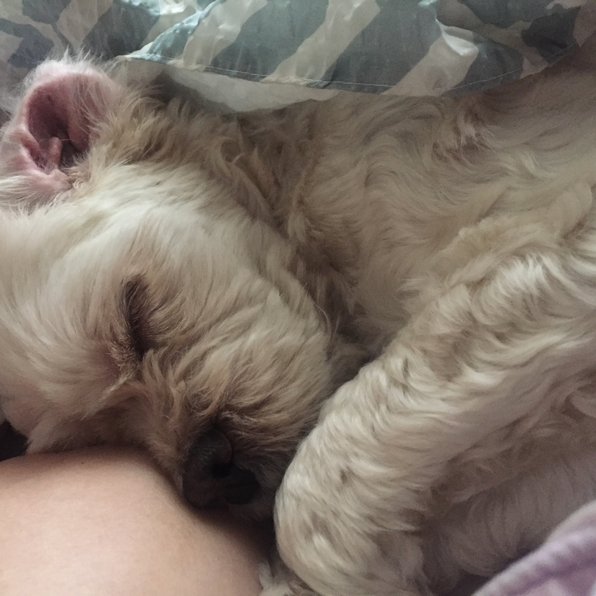

- 구름이
- 도윤이
- 박민선 씨
- 박지원 씨
구름이 설명서
구름이의 가족
- 도윤
- 엄마
- 구름
- 아빠
구름이에 대한 소개
자, 여기서 구름이는 2014년 2월 말에 태어난 코카스파니엘이다.
태어난 후 지금까지 동탄원천로 708동 2304호를 벗어난 적이 없다.
중성화를 하지 않았으며, 지병으로 귓병과 피부병을 앓고 있다.

구름이를 위한 노래
아주 조그만 눈도 못 뜨는 널 처음 데려오던 날
어쩜 그리도 사랑스러운지 놀랍기만 하다가
먹고 자고 아프기도 하는 널 보며
난 이런 생각을 했어
지금 이 순간 나는 알아 왠지는 몰라 그냥 알아
언젠가 너로 인해 많이 울게 될 거라는 걸 알아
궁금한 듯 나를 바라보는 널 보며
난 그런 생각을 했어